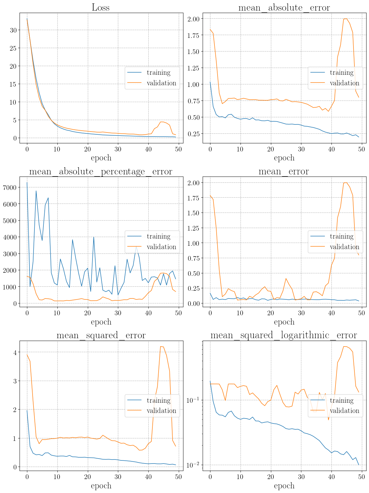

Usage¶
We give here a brief introduction to the use of the DnnLik class. Refer to the
full class documentation for more details. All examples will be referred to the toy likelihood introduced in
the Likelihood object Usage section of the documentation.
A DnnLik object is defined through a series of dictionaries (or lists of dictionaries) describing data,
DNN input parameters, DNN optimizer, DNN compilation parameters, training callbacks parameters, and DNN training parameters.
An example of the dictionaries defining the DnnLik configurations is given by
model_data_inputs = {"npoints": [10000, 3000, 5000],
"scalerX": True,
"scalerY": True,
"weighted": False}
model_define_inputs = {"hidden_layers": [[300, "selu"],
[300, "relu"],
[300, "selu", "lecun_normal"],
[300, "relu", "glorot_uniform"]],
"act_func_out_layer": "linear",
"dropout_rate": 0,
"batch_norm": True}
model_optimizer_inputs = {"name": "Adam",
"learning_rate": 0.001,
"beta_1": 0.9,
"beta_2": 0.999,
"amsgrad": False}
model_compile_inputs = {"loss": "mse",
"metrics": ["mean_squared_error", "mae", "msle", "me"]}
model_callbacks_inputs = [{"name": "EarlyStopping",
"monitor": "loss",
"mode": "min",
"patience": 100,
"min_delta": 0.0001,
"restore_best_weights": True},
"TerminateOnNaN",
"PlotLossesKeras",
{"name": "ReduceLROnPlateau",
"monitor": "loss",
"mode": "min",
"factor": 0.2,
"min_lr": 0.00008,
"patience": 10,
"min_delta": 0.0001},
{"name": "ModelCheckpoint",
"filepath": "automatically set by the framework",
"monitor": "loss",
"mode": "min",
"save_best_only": True,
"save_freq": "epoch"}]
model_train_inputs={"epochs": 300,
"batch_size": 512}
Each of the dictionaries is an input argument of the DnnLik class (see the corresponding
documentation pages for a complete documentation:
model_data_inputs, model_define_inputs,
model_optimizer_inputs, model_compile_inputs,
model_callbacks_inputs, model_train_inputs).
The model_data_inputs dictionary contains information about the way data are processed
by the DNN. In particular it specifies the number of points for training, validation, and test, if X and/or Y data
need to be scaled through a StandardScalers and if Y data need to be weighted. These parameters are passed to the
Data container class that is automatically instantiated by the DnnLik
one and that is used for data management.
The model_define_inputs dictionary contains the main hyperparameters needed to define
the DNN. They are given by the scruture of hidden layers each of which with number of nodes, activation function, and layer initialization,
the activation function in the last layer, the amount of dropout, the batch normalization option, and so on (in general all arguments
taken by the tf.keras.Model class).
The model_optimizer_inputs dictionary is devoted to the definition of the optimizer.
The optimizer name is defined by the "name" key. All tf.keras.optimizers are supported and all optimizers arguments are
passed by the remaining items in the dictionary.
The model_compile_inputs dictionary defines inputs for the tf.keras.Model.compile
class. The loss is passed through its name (in case of a custom loss its name need to be defined within the framework) and the metrics
that the user is interested in monitoring are passed through a list of names. Names can be passed in all formats supported by tf.keras.
Callbacks are passed through the list of dictionaries model_callbacks_inputs. All
tf.keras.callbacks are supported. One can add them just by adding their name to the list, to pass it with default arguments,
or by a dictionary containing the "name" item and all other arguments supported by that callback.
Finally, the model_train_inputs dictionary is used to pass parameters, such as the number of
epochs and the batch size, to the tf.keras.Model.fit method.
The DnnLik object can be instantiated in three different ways, depending on the value of the arguments
data, input_data_file,
and input_data_file. The latter argument determines whether a new object is created from
input arguments (when is set to None) or the object is imported from a previously saved one (when is set to the corresponding
path). When a new object is created, data can be passed both through an already defined Data object
or through the path to a previously saved one. If the path is passed, then it is always used and, if a the locally defined
Data is passed, it gets ignored.
Starting from the data object we have saved in the Data object Usage section of the documentation,
and using the arguments defined above, we can create a DnnLik object as follows:
dnnlikelihood = DNNLikelihood.DnnLik(name="DNNLikelihood_toy",
data=None,
input_data_file="toy/data/toy_data",
load_on_RAM=False,
seed=1,
dtype=None,
same_data=True,
model_data_inputs=model_data_inputs,
model_define_inputs=model_define_inputs,
model_optimizer_inputs=model_optimizer_inputs,
model_compile_inputs=model_compile_inputs,
model_callbacks_inputs=model_callbacks_inputs,
model_train_inputs=model_train_inputs,
resources_inputs=None,
output_folder="toy/dnnlikelihood",
ensemble_name=None,
input_summary_json_file=None,
verbose=True)
>>> This is a 'standalone' DNNLikelihood and does not belong to a DNNLikelihood_ensemble. The attributes 'ensemble_name' and 'ensemble_folder' are therefore been set to None.
88 CPU cores available
2 GPUs available
2 GPUs have been set:
['/device:GPU:0', 'device: 0, name: GeForce RTX 2080 Ti, pci bus id: 0000:3b:00.0, compute capability: 7.5']
['/device:GPU:1', 'device: 1, name: GeForce RTX 2080 Ti, pci bus id: 0000:af:00.0, compute capability: 7.5'] .
Data object loaded in 0.01676490000000186 .
Data log file <abs_path_to_input_data_file>.log updated in 0.0028986999999993657 s.
Optimizer set to: optimizers.Adam(learning_rate=0.001, beta_1=0.9, beta_2=0.999, amsgrad=False)
Loss set to: mse
Setting metrics
Added metric: mean_squared_error
Added metric: mae
Added metric: msle
Added metric: me
Setting callbacks
Added callback: callbacks.TerminateOnNaN()
Added callback: PlotLossesKeras()
Added callback: callbacks.EarlyStopping(monitor='val_loss', mode='min', patience=100, min_delta=0.0001, restore_best_weights=True)
Added callback: callbacks.ReduceLROnPlateau(monitor='val_loss', mode='min', factor=0.2, min_lr=8e-05, patience=10, min_delta=0.0001)
Added callback: callbacks.ModelCheckpoint(filepath = '<abs_path_to_output_folder>\checkpoints\DNNLikelihood_toy_checkpoint.{epoch:02d}-{val_loss:.2f}.h5', monitor='val_loss', mode='min', save_best_only=True, save_freq='epoch')
DnnLik json file <abs_path_to_output_folder>\DNNLikelihood_toy_summary.json saved in 0.0027066999999973973 s.
DnnLik log file <abs_path_to_output_folder>\DNNLikelihood_toy.log saved in 0.0014132999999993956 s.
where we used the placeholders <abs_path_to_input_data_file> and <abs_path_to_output_folder> to indicate the absolute path to
input_data_file and output_folder.
If the name argument is not passed, then one is automatically generated.
The load_on_RAM argument is passed directly to the Data object (see the
documentation of Data.load_on_RAM). The seed argument is used to
initialize the numpy and TensorFlow random number generators. The output_folder argument
is specified as usual, with a relative or absolute path, and if left unspecified, it is automatically set to the current working
directory.
The same_data and ensemble_name arguments
should not be specified by the user (or left None) and are automatically passed in case the
DnnLik object is part of a DNNLikEnsemble.
When the object is created, resources are allocated through the hinerithed class Resources (
see Resources management for details). The datresources_inputsa
should not be specified by the user (or left None) since it is only used for automatic resources allocation when the object is part
of a DNNLikEnsemble object.
The DnnLik.__init__ method sets several attributes, which can be seen in the following output:
dnnlikelihood.__dict__
>>> ['active_gpus', [['/device:GPU:0', 'device: 0, name: GeForce RTX 2080 Ti, pci bus id: 0000:3b:00.0, compute capability: 7.5'], ['/device:GPU:1', 'device: 1, name: GeForce RTX 2080 Ti, pci bus id: 0000:af:00.0, compute capability: 7.5']]]
['act_func_out_layer', 'linear']
['available_cpu', ['/device:CPU:0', 'Intel(R) Xeon(R) Gold 6152 CPU @ 2.10GHz', 88]]
['available_gpus', [['/device:GPU:0', 'device: 0, name: GeForce RTX 2080 Ti, pci bus id: 0000:3b:00.0, compute capability: 7.5'], ['/device:GPU:1', 'device: 1, name: GeForce RTX 2080 Ti, pci bus id: 0000:af:00.0, compute capability: 7.5']]]
['batch_norm', True]
['batch_size', 512]
['callbacks', [<tensorflow.python.keras.callbacks.TerminateOnNaN object at 0x0000029E48B2F5B0>, <livelossplot.inputs.tf_keras.PlotLossesCallback object at 0x0000029E48B2F700>, <tensorflow.python.keras.callbacks.EarlyStopping object at 0x0000029E48B2F520>, <tensorflow.python.keras.callbacks.ReduceLROnPlateau object at 0x0000029E5400CBE0>, <tensorflow.python.keras.callbacks.ModelCheckpoint object at 0x0000029E5404FFD0>]]
['callbacks_strings', ['callbacks.TerminateOnNaN()', 'PlotLossesKeras()', "callbacks.EarlyStopping(monitor='val_loss', mode='min', patience=100, min_delta=0.0001, restore_best_weights=True)", "callbacks.ReduceLROnPlateau(monitor='val_loss', mode='min', factor=0.2, min_lr=8e-05, patience=10, min_delta=0.0001)", "callbacks.ModelCheckpoint(filepath = r'<abs_path_to_output_folder>/checkpoints/DNNLikelihood_toy_checkpoint.{epoch:02d}-{val_loss:.2f}.h5', monitor='val_loss', mode='min', save_best_only=True, save_freq='epoch')"]]
['data', <DNNLikelihood.data.Data object at 0x0000029E5404FE80>]
['dropout_rate', 0]
['dtype', 'float64']
['ensemble_folder', None]
['ensemble_name', None]
['epochs_available', 0]
['epochs_required', 300]
['figures_list', []]
['gpu_mode', True]
['hidden_layers', [[300, 'selu'], [300, 'relu'], [300, 'selu', 'lecun_normal'], [300, 'relu', 'glorot_uniform']]]
['history', {}]
['idx_test', array([], dtype=int32)]
['idx_train', array([], dtype=int32)]
['idx_val', array([], dtype=int32)]
['input_data_file', '<abs_path_to_input_data_file>'
['input_files_base_name', None]
['input_history_json_file', None]
['input_idx_h5_file', None]
['input_log_file', None]
['input_predictions_h5_file', None]
['input_scalers_pickle_file', None]
['input_summary_json_file', None]
['input_tf_model_h5_file', None]
['load_on_RAM', False]
['log', {'2021-01-29-09-13-49.9946': {'action': 'created'}, '2021-01-29-09-13-55.4107': {'action': 'metrics set', 'metrics': ['mean_squared_error', 'mae', 'msle', 'me']}, '2021-01-29-09-13-55.4177': {'action': 'callbacks set', 'callbacks': ['callbacks.TerminateOnNaN()', 'PlotLossesKeras()', "callbacks.EarlyStopping(monitor='val_loss', mode='min', patience=100, min_delta=0.0001, restore_best_weights=True)", "callbacks.ReduceLROnPlateau(monitor='val_loss', mode='min', factor=0.2, min_lr=8e-05, patience=10, min_delta=0.0001)", "callbacks.ModelCheckpoint(filepath = r'<abs_path_to_output_folder>/checkpoints/DNNLikelihood_toy_checkpoint.{epoch:02d}-{val_loss:.2f}.h5', monitor='val_loss', mode='min', save_best_only=True, save_freq='epoch')"]}, '2021-01-29-09-13-55.4227': {'action': 'saved summary json', 'file name': 'DNNLikelihood_toy_summary.json', 'file path': '<abs_path_to_output_folder>/DNNLikelihood_toy_summary.json'}}]
['loss', <function mean_squared_error at 0x0000029E4D0FC4C0>]
['loss_string', 'mse']
['metrics', [<function mean_squared_error at 0x0000029E4D0FC4C0>, <function mean_absolute_error at 0x0000029E4D0FC5E0>, <function mean_squared_logarithmic_error at 0x0000029E4D0FC820>, <bound method DnnLik.mean_error of <DNNLikelihood.dnn_likelihood.DnnLik object at 0x0000029E5404FCD0>>]]
['metrics_string', ['mean_squared_error', 'mae', 'msle', 'me']]
['model', None]
['name', 'DNNLikelihood_toy']
['ndims', 11]
['npoints_available', 200000]
['npoints_test', 5000]
['npoints_test_available', 60000]
['npoints_train', 10000]
['npoints_train_val_available', 140000]
['npoints_val', 3000]
['optimizer', <tensorflow.python.keras.optimizer_v2.adam.Adam object at 0x0000029E48B2B250>]
['optimizer_string', 'optimizers.Adam(learning_rate=0.001, beta_1=0.9, beta_2=0.999, amsgrad=False)']
['output_checkpoints_files', '<abs_path_to_output_folder>/checkpoints/DNNLikelihood_toy_checkpoint.{epoch:02d}-{val_loss:.2f}.h5']
['output_checkpoints_folder', '<abs_path_to_output_folder>/checkpoints']
['output_figures_base_file', '<abs_path_to_output_folder>/figures/DNNLikelihood_toy_figure']
['output_figures_folder', '<abs_path_to_output_folder>/figures']
['output_figure_plot_losses_keras_file', None]
['output_files_base_name', '<abs_path_to_output_folder>/DNNLikelihood_toy']
['output_folder', '<abs_path_to_output_folder>']
['output_history_json_file', '<abs_path_to_output_folder>/DNNLikelihood_toy_history.json']
['output_idx_h5_file', '<abs_path_to_output_folder>/DNNLikelihood_toy_idx.h5']
['output_log_file', '<abs_path_to_output_folder>/DNNLikelihood_toy.log']
['output_predictions_h5_file', '<abs_path_to_output_folder>/DNNLikelihood_toy_predictions.h5']
['output_scalers_pickle_file', '<abs_path_to_output_folder>/DNNLikelihood_toy_scalers.pickle']
['output_summary_json_file', '<abs_path_to_output_folder>/DNNLikelihood_toy_summary.json']
['output_tensorboard_log_dir', None]
['output_tf_model_graph_pdf_file', '<abs_path_to_output_folder>/DNNLikelihood_toy_model_graph.pdf']
['output_tf_model_h5_file', '<abs_path_to_output_folder>/DNNLikelihood_toy_model.h5']
['output_tf_model_json_file', '<abs_path_to_output_folder>/DNNLikelihood_toy_model.json']
['output_tf_model_onnx_file', '<abs_path_to_output_folder>/DNNLikelihood_toy_model.onnx']
['pars_bounds', array([[ -5., 5.],
[-inf, inf],
[-inf, inf],
[-inf, inf],
[-inf, inf],
[-inf, inf],
[-inf, inf],
[-inf, inf],
[-inf, inf],
[-inf, inf],
[-inf, inf]])]
['pars_central', array([1, 0, 0, 0, 0, 0, 0, 0, 0, 0, 0])]
['pars_labels', ['$/theta_{1}$', '$/nu_{1}$', '$/nu_{2}$', '$/nu_{3}$', '$/nu_{4}$', '$/nu_{5}$', '$/nu_{6}$', '$/nu_{7}$', '$/nu_{8}$', '$/nu_{9}$', '$/nu_{10}$']]
['pars_labels_auto', ['$/theta_{1}$', '$/nu_{1}$', '$/nu_{2}$', '$/nu_{3}$', '$/nu_{4}$', '$/nu_{5}$', '$/nu_{6}$', '$/nu_{7}$', '$/nu_{8}$', '$/nu_{9}$', '$/nu_{10}$']]
['pars_pos_nuis', array([ 1, 2, 3, 4, 5, 6, 7, 8, 9, 10])]
['pars_pos_poi', array([0])]
['predictions', {}]
['same_data', True]
['scalerX', None]
['scalerX_bool', True]
['scalerY', None]
['scalerY_bool', True]
['script_file', '<abs_path_to_output_folder>/DNNLikelihood_toy_script.py']
['seed', 1]
['standalone', True]
['verbose', True]
['weighted', False]
['W_train', array([], dtype=float64)]
['X_test', array([], shape=(1, 0), dtype=float64)]
['X_train', array([], shape=(1, 0), dtype=float64)]
['X_val', array([], shape=(1, 0), dtype=float64)]
['Y_test', array([], dtype=float64)]
['Y_train', array([], dtype=float64)]
['Y_val', array([], dtype=float64)]
['_DnnLik__model_callbacks_inputs', [{'name': 'EarlyStopping', 'monitor': 'loss', 'mode': 'min', 'patience': 100, 'min_delta': 0.0001, 'restore_best_weights': True}, 'TerminateOnNaN', 'PlotLossesKeras', {'name': 'ReduceLROnPlateau', 'monitor': 'loss', 'mode': 'min', 'factor': 0.2, 'min_lr': 8e-05, 'patience': 10, 'min_delta': 0.0001}, {'name': 'ModelCheckpoint', 'filepath': 'automatically set by the framework', 'monitor': 'loss', 'mode': 'min', 'save_best_only': True, 'save_freq': 'epoch'}]]
['_DnnLik__model_compile_inputs', {'loss': 'mse', 'metrics': ['mean_squared_error', 'mae', 'msle', 'me']}]
['_DnnLik__model_data_inputs', {'npoints': [10000, 3000, 5000], 'scalerX': True, 'scalerY': True, 'weighted': False, 'scaleX': False, 'scaleY': False}]
['_DnnLik__model_define_inputs', {'hidden_layers': [[300, 'selu'], [300, 'relu'], [300, 'selu', 'lecun_normal'], [300, 'relu', 'glorot_uniform']], 'act_func_out_layer': 'linear', 'dropout_rate': 0, 'batch_norm': True}]
['_DnnLik__model_optimizer_inputs', {'name': 'Adam', 'learning_rate': 0.001, 'beta_1': 0.9, 'beta_2': 0.999, 'amsgrad': False}]
['_DnnLik__model_train_inputs', {'epochs': 300, 'batch_size': 512}]
['_DnnLik__resources_inputs', None]
Notice that the DnnLik.__init__ method initializes
all attributes, leaving empty (with the correct type), all those arguments that will be populated during the object usage.
As it can be seen from the output of the object creation code, the object is saved upon creation. In case old files exist in the
specified path, they (the old ones) are renamed by appending a timestamp to them.
Once the DnnLik object is created, the DnnLik.model_build
method is used to create the tf.keras.Model and compile it on the available resources as
dnnlikelihood.model_build(force=True,gpu="auto",verbose=2)
>>> Building tf model for DNNLikelihood DNNLikelihood_toy on device ['/device:GPU:0', 'device: 0, name: GeForce RTX 2080 Ti, pci bus id: 0000:3b:00.0, compute capability: 7.5']
DnnLik log file <abs_path_to_output_folder>\DNNLikelihood_toy.log updated in 0.001084800000000996 s.
Model for DNNLikelihood DNNLikelihood_toy defined in 0.8613295000000107 s.
Model: "functional_1"
_________________________________________________________________
Layer (type) Output Shape Param #
=================================================================
input_1 (InputLayer) [(None, 11)] 0
_________________________________________________________________
dense (Dense) (None, 300) 3600
_________________________________________________________________
batch_normalization_1 (Batch (None, 300) 1200
_________________________________________________________________
dense_1 (Dense) (None, 300) 90300
_________________________________________________________________
batch_normalization_2 (Batch (None, 300) 1200
_________________________________________________________________
dense_2 (Dense) (None, 300) 90300
_________________________________________________________________
dense_3 (Dense) (None, 300) 90300
_________________________________________________________________
batch_normalization_3 (Batch (None, 300) 1200
_________________________________________________________________
dense_4 (Dense) (None, 300) 90300
_________________________________________________________________
batch_normalization_4 (Batch (None, 300) 1200
_________________________________________________________________
dense_5 (Dense) (None, 1) 301
=================================================================
Total params: 369,901
Trainable params: 367,501
Non-trainable params: 2,400
_________________________________________________________________
None
DnnLik log file <abs_path_to_output_folder>\DNNLikelihood_toy.log updated in 0.0009322000000224762 s.
Model for DNNLikelihood DNNLikelihood_toy compiled in 0.01071439999998347 s.
DnnLik log file <abs_path_to_output_folder>\DNNLikelihood_toy.log updated in 0.0013625999999931082 s.
This method uses the methods DnnLik.model_define and
DnnLik.model_compile and implements the tf.distribute.OneDeviceStrategy strategy to
place the compiled model on a specified (e.g. gpu=1) or unspecified (i.e. gpu="auto") device. The force argument determines
if the model is re-generated and/or re-compiled even if already available, while the verbose=2 ensures that all print commands
from each of the methods called within the method are active. The method sets, among others, the
DnnLik.model attribute, which is the principal object containing the tf.keras.Model.
The DNNLikelihood is now ready to be trained. This can be done with the DnnLik.model_train
method:
dnnlikelihood.model_train(verbose=2)
>>> <image>
Loss
training (min: 0.011, max: 1.135, cur: 0.014)
validation (min: 0.016, max: 7.097, cur: 0.021)
mean_absolute_error
training (min: 0.081, max: 0.762, cur: 0.091)
validation (min: 0.091, max: 2.580, cur: 0.104)
mean_error
training (min: 0.020, max: 0.053, cur: 0.032)
validation (min: 0.004, max: 2.578, cur: 0.008)
mean_squared_error
training (min: 0.011, max: 1.135, cur: 0.014)
validation (min: 0.016, max: 7.097, cur: 0.021)
mean_squared_logarithmic_error
training (min: 0.002, max: 0.114, cur: 0.002)
validation (min: 0.002, max: 0.185, cur: 0.003)
20/20 - 1s - loss: 0.0137 - mean_squared_error: 0.0137 - mean_absolute_error: 0.0907 - mean_squared_logarithmic_error: 0.0023 - mean_error: 0.0324 - val_loss: 0.0206 - val_mean_squared_error: 0.0206 - val_mean_absolute_error: 0.1043 - val_mean_squared_logarithmic_error: 0.0027 - val_mean_error: 0.0082
no existing history
DnnLik log file <abs_path_to_output_folder>\DNNLikelihood_toy.log updated in 0.001417500000002292 s.
Model for DNNLikelihood DNNLikelihood_toy successfully trained for 300 epochs in 1.1328149126666665 s.
where <image> shows the training in real time whose final result is:
{kind=link}
In this example we have used the PlotLossesKeras callback from livelossplot to plot the metrics in real time
during training. Notice that this may be useful for quick checks, but it slows down training and is not optimal for long trainings.
Since no data were available yet when the method was called, training and validation data generation is done automatically.
The user may want to generate data in advance, which can be done as follows:
dnnlikelihood.generate_train_data(verbose=1)
dnnlikelihood.generate_test_data(verbose=1)
>>> Data log file <abs_path_to_input_data_file>.log updated in 0.00331639999999922 s.
Added 10000 (X_train, Y_train) samples and 3000 (X_val, Y_val) samples in 14.896276299999998 s.
Data log file <abs_path_to_input_data_file>.log updated in 0.003176200000002183 s.
Standard scalers defined in 0.0030892000000015685 s.
DnnLik log file <abs_path_to_output_folder>\DNNLikelihood_toy.log updated in 0.001671200000000539 s.
Data log file <abs_path_to_input_data_file>.log updated in 0.0031719999999992865 s.
Added 5000 (X_test, Y_test) samples in 0.07339520000000022 s.
DnnLik log file <abs_path_to_output_folder>\DNNLikelihood_toy.log updated in 0.0009379000000002691 s.
Data generation is taken care by the DnnLik.data attribute, which is a
Data object (see the Data object documentation for more details on data management).
The DnnLik object is saved automatically after performing operations with its methods.
However, the user can also save it at any time with the commands:
dnnlikelihood.save(overwrite=True,verbose=2)
>>> tf executing eager_mode: True
tf.keras model eager_mode: False
WARN: No corresponding ONNX op matches the tf.op node keras_learning_phase of type PlaceholderWithDefault
The generated ONNX model needs run with the custom op supports.
<abs_path_to_output_folder>\DNNLikelihood_toy_idx.h5 created and saved in 0.0037636999995811493 s.
<abs_path_to_output_folder>\DNNLikelihood_toy_model.json created and saved. 0.005548800000724441 s.
<abs_path_to_output_folder>\DNNLikelihood_toy_model.h5 created and saved. 0.04865059999974619 s.
Model not defined. No file is saved.
<abs_path_to_output_folder>\DNNLikelihood_toy_history.json created and saved. 0.000771300000451447 s.
<abs_path_to_output_folder>\DNNLikelihood_toy_predictions.h5 created and saved. 0.0030419000004258123 s.
DnnLik json file <abs_path_to_output_folder>\DNNLikelihood_toy_summary.json updated in 0.002336999999897671 s.
DnnLik scalers pickle file <abs_path_to_output_folder>\DNNLikelihood_toy_scalers.pickle saved in 0.0011084999996455736 s.
<abs_path_to_output_folder>\DNNLikelihood_toy_model_graph.pdf created and saved in 1.8243855999999141 s.
DnnLik log file <abs_path_to_output_folder>\DNNLikelihood_toy.log updated in 0.0019879000001310487 s.
Now that the DNNLikelihood is built and trained, one can pass to evaluate its performances. There are several methods to compute
metrics and make plots, whose extensive guide is available in the methods documentation. The framework also
includes the DnnLik.model_compute_predictions method,
devoted to a comprehensive evaluation of the model performances. It can be used as follows:
dnnlikelihood.model_compute_predictions(CI=DNNLikelihood.inference.CI_from_sigma([DNNLikelihood.inference.sigma_from_CI(0.5), 1, 2, 3]),
pars=[0,2,4,5,8],
batch_size=None,
model_predict_kwargs = {"x_boundaries": "original",
"y_boundaries": False,
"save_log": False},
HPDI_kwargs = {"nbins": 25,
"print_hist": False,
"optimize_binning": True},
plot_training_history_kwargs = {"metrics": ["loss", "me"],
"yscale": "linear",
"show_plot": True},
plot_pars_coverage_kwargs = {"loglik": False,
"show_plot": True},
plot_lik_distribution_kwargs = {"loglik": False,
"show_plot": True},
plot_corners_2samp_kwargs = {"ranges_extend": 1.3,
"max_points": 100000,
"nbins": 60,
"show_plot": True},
frequentist_inference = {},
overwrite=True,verbose=2)